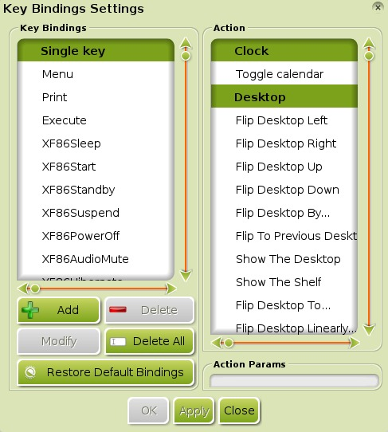
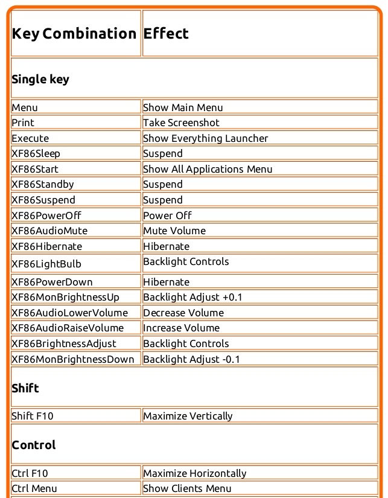
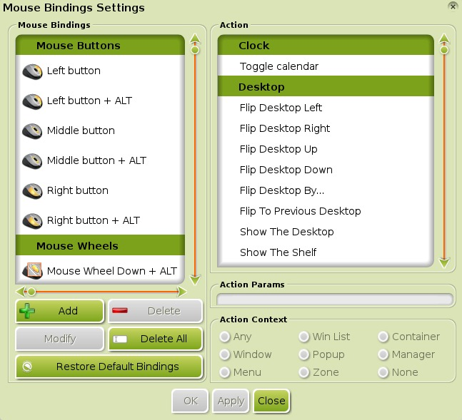
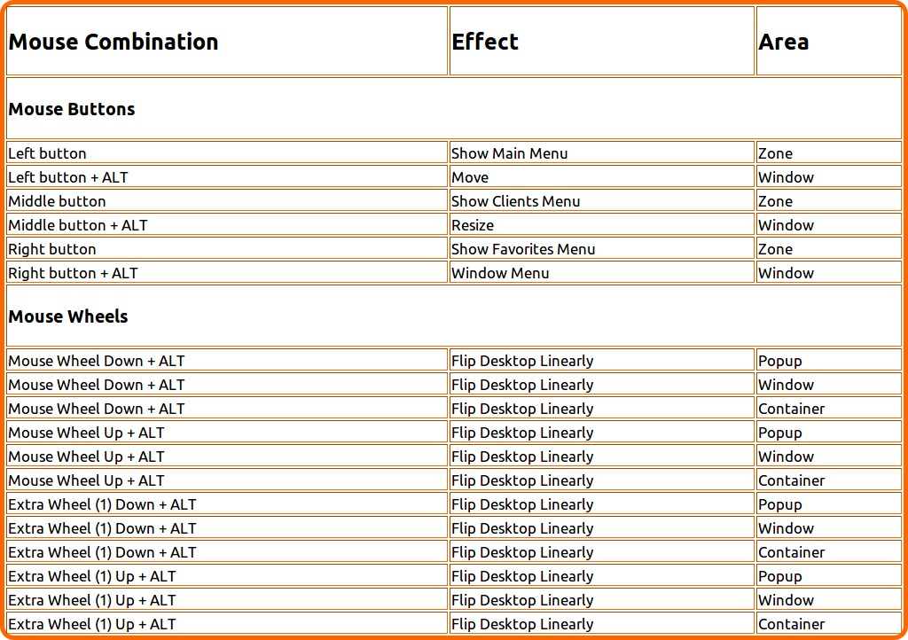
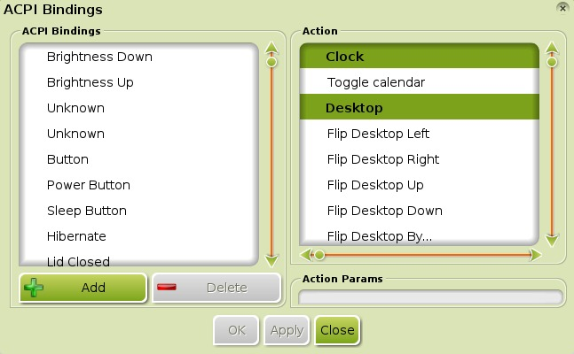
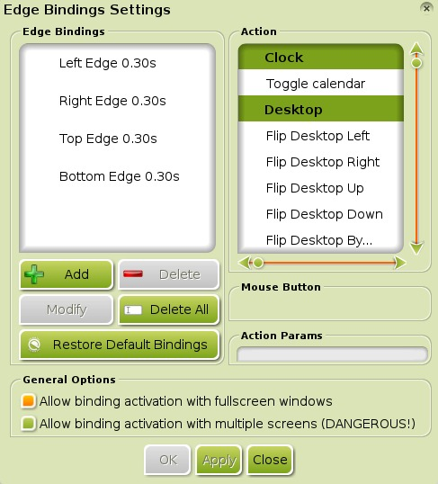

[click on any image to enlarge]
In Enlightenment (E17) parlance, Bindings refer to Shortcuts that you can configure to facilitate navigation and a variety of actions using either keyboard, mouse, event, or edge input. You can even configure any binding to launch a script or a program.
The types of bindings covered here are:
- Key Bindings
- Input from keyboard. - Mouse Bindings
- Input from mouse and modifying keys. - ACPI Bindings
- Input from events. - Edge Bindings
- Input from edges of screen.
- Programming Bindings
- General how-to for programming bindings.
General Info:
Each Binding dialog shares some basic things in common. There are two sections. The left section, Bindings, lists the input combinations already assigned. It allows you to modify bindings and add available combinations so that you may assign them an action. The right section, Action, lists all of the possible actions that can be assigned and triggered. The Bindings section varies depending on the binding type, while the Action section remains the same for all four types of bindings.
Because the process of modifying/creating bindings is so similar for the four types, there is a binding-independent section on how to program bindings, located at the bottom of the page.
Key Bindings

{kind=link}
Key Bindings can be configured under Main Menu>Settings>All>Input>Key Bindings, which opens the Key Bindings Settings dialog depicted to the right.
Many keys have been configured by default (view under Default Key Bindings at the bottom of section), but, just like other bindings, you can change any key's action, and add new key combinations and actions as needed.
Explore Key Binding Settings
To get a "feel" for how the Key Binding Settings works, click on some of the keys in the Key Bindings column, and observe what happens in the Action column on the right.
For example, on the left, under Single Key,
there is a key called Menu. Click on that Key Binding,
and its configured action pops into view on the right, Show Main Menu.
Note: The Menu key on many keyboards has a "Menu" symbol, and is
located two or three keys to the right of Space.
Other Single Keys are listed below Menu. The XF86* series of keys exist on many keyboards for controlling hardware functions like audio volume, screen brightness and so on. Click on XF86AudioMute, for example, and you will see that it maps to the action Mute Volume.
Below the Single Keys, the rest of the Key Bindings are grouped into categories:
*Note: Any of the above key combos,
with the exception of the "Win" key, cannot be programmed to produce an action by themselves;
they must be paired with another key. Also, the "Win" Key is the key with the windows logo.
As stated in General Info,
the left section displays input that has already been assigned. Clicking on a displayed key combination will show it's
assigned action. For example, under the Shift category, the combo Shift+F10
is the only Shift key combination that has been configured by default.
Clicking on Shift+F10 in the left column will highlight the action
Maximize Vertically in the right column. This action increases the
size of the focused window to its maximum height in the vertical direction.
Note: There are many other possible key combinations that can be
programmed with the Shift key including (but not limited to):
Shift + A to Z, 1 to 0, F1 to F9, F11, and F12.
Available actions are dependent on what Modules are loaded and are grouped into categories. Unlike clicking on a key combination, clicking on any Action will not show whether it has been assigned. The image below is an example of the commonly displayed categories:
*Note:
These are just the categories for actions. You can consult the table at the bottom of this section for the default actions programmed
into your Bodhi Linux installation.
Default Key Bindings

Important: This will remove any additional Key Bindings you may have set, as well.
If at any point you decide that you have made a mess of your
Key Bindings and want to go back to the default configuration,
simply open the Key Bindings Settings dialog and click
Restore Default Bindings at the bottom. Click OK or
Apply to save them.
The image to the rightabove serves as a link to the real and complete list of default Key Bindings, as well as depicting a sampling of the default keyboard shortcuts for Bodhi Linux 2.2.0 and above. To view the entirety, enlarged, click the image.
*To return to the top of the page, click here.
Mouse Bindings

{kind=link}
Mouse Bindings can be configured under Main Menu>Settings>All>Input>Mouse Bindings, which opens the Mouse Bindings Settings dialog depicted to the left.
Many mouse+key combinations have been configured by default (view under Default Mouse Bindings at the bottom of section). Just like other bindings,you can change any mouse+key combo's action, and add new mouse+key combinations and actions as needed.
Explore Mouse Binding Settings
Same as in the Key Bindings section, click on some of the mouse bindings in the Mouse Bindings column, and observe what happens in the Action column on the right. This is the best way to familiarize yourself.
For example, on the left, under Mouse Buttons, there is a button called Left Button. Click on that Mouse Binding, and its configured action pops into view on the right, Show Main Menu. It performs the same action as the Menu key binding in the Key Bindings example!
Other Mouse Buttons are listed below Left Button. Conventional mice have a left button, right button, middle button, and scroll wheel.
*Note: Unlike the Key Bindings Settings,
the Mouse Bindings are grouped into only two categories.
As stated in General Info,
the left section displays input that has already been assigned. Notice that there are some mouse buttons paired with keys.
The keys that you can pair with mouse-input are limited to the ALT,
CTRL, WIN, and SHIFT keys,
collectively referred to as modifier-keys or modifying-keys.
Note: Notice the Action Context section.
This dictates the location where the Binding will have to be
initiated for it's bound action to be activated.
Available actions are dependent on what Modules are loaded and are grouped into categories. Clicking on any Action will not show whether it has been assigned. The image below is an example of the commonly displayed categories:
Default Mouse Bindings

Important: This will remove any additional Mouse Bindings you may have set, as well.
If at any point you decide that you have made a mess of your
Mouse Bindings and want to go back to the default configuration,
simply open the Mouse Bindings Settings dialog and click
Restore Default Bindings at the bottom. Click OK or
Apply to save them.
The image to the rightabove serves as a link to the real and complete list of default Mouse Bindings, as well as depicting a sampling of the default mouse bindings for Bodhi Linux 2.2.0 and above. To view the entirety, enlarged, click the image.
*To return to the top of the page, click here.
ACPI Bindings

{kind=link}
ACPI Bindings can be configured under Main Menu>Settings>All>Input>ACPI Bindings, which opens the ACPI Bindings Settings dialog depicted to the right.
A few events have been bound by default (view under Default ACPI Bindings at the bottom of section). Just like other bindings,you can change any ACPI Binding's action, and add new ACPI Bindings and actions as needed.
Explore ACPI Binding Settings
Same as in the Key Bindings & Mouse Bindings sections, click on some of the ACPI bindings in the ACPI Bindings column, and observe what happens in the Action column on the right. This is the best way to familiarize yourself.
For example, on the left, under ACPI Bindings, there is an event called Power Button. Click on that ACPI Binding, and its configured action pops into view on the right, Power Off Now. It commences to power off the computer in the event the power button is pressed.
Other ACPI Bindings are listed around Power Button.
*Note: Unlike the Key & Mouse Bindings Settings,
the ACPI Bindings are grouped into only one category.
As stated in General Info, the left section displays input that has already been assigned. Mentioned earlier, clicking on a displayed event binding will show it's assigned action.
Available actions are dependent on what Modules are loaded and are grouped into categories. Clicking on any Action will not show whether it has been assigned. The image below is an example of the commonly displayed categories:
Default ACPI Bindings
ACPI Bindings Settings does not feature a Restore Default Bindings button.
In light of this, if at any point you decide that you have made a mess of your
ACPI Bindings and want to go back to the default configuration,
open the ACPI Bindings Settings dialog and, with the chart listed below as reference,
delete all added ACPI bindings and properly re-assign the default Actions for the default Input. Click OK or
Apply to save them.
The chart below depicts the default ACPI bindings for Bodhi Linux 2.1.0 and above.
*To return to the top of the page, click here.
Edge Bindings

{kind=link}
Edge Bindings can be configured under Main Menu>Settings>All>Input>Edge Bindings, which opens the Edge Bindings Settings dialog depicted to the left.
No screen edge's have been bound by default. Just like other bindings, you can add any Edge Binding you'd like. You will, of course, be able to modify any Edge Binding and its assigned action as needed.
Explore Edge Binding Settings
Same as in the Key Bindings, Mouse Bindings, & ACPI Bindings sections, click on some of the bindings in the Edge Bindings column, and observe what happens in the Action column on the right. This is the best way to familiarize yourself.
For example, on the left, under Edge Bindings, there is a binding called Left Edge 0.30s. Click on that Edge Binding, and its configured action pops into view on the right, Flip Desktop in Direction.... In this case, that direction is left.
Also, take notice of the General Options. There is an option to allow Edge Bindings to function even when windows are fullscreen (enabled by default), and there is another option to allow Edge Bindings on multiple screens (currently experimental).
*Note: Similar to the ACPI Bindings Settings,
the Edge Bindings are grouped into only one category.
As stated in General Info, the left section displays input that has already been assigned. Notice that there are durations of time in seconds on all Edge Bindings. This is the time it will take for the action to be performed, once the mouse-cursor or window has made contact with that particular edge. Mentioned earlier, clicking on a displayed Edge Bindings will show its assigned action.
Available actions are dependent on what Modules are loaded and are grouped into categories. Clicking on any Action will not show whether it has been assigned. The image below is an example of the commonly displayed categories:
Default Edge Bindings
Important: This will remove any additional Edge Bindings you may have set, as well.
If at any point you decide that you have made a mess of your
Edge Bindings and want to go back to the default configuration,
simply open the Edge Bindings Settings dialog and click
Restore Default Bindings at the bottom. Click OK or
Apply to save them.
The chart below depicts the default edge bindings for Bodhi Linux 2.1.0 and above.
*To return to the top of the page, click here.
Programming Bindings
Generalizations
The process of modifying and creating, for any type of Binding, is similar enough that it does not warrant specialized examples to understand the process. A general walkthrough will be done in regard to creating and modifying new bindings.
For this, we will go through a couple of simple examples that demonstrate how to add new & modify existing Key Bindings.
Adding a Binding
Suppose you want to program Alt+L, a key combination that is not bound by default, to open Leafpad.
In the left column, click on Add Binding. A small window pops up asking you to enter the desired key sequence. Press the Alt+L keys together. This will create the binding in the Key Bindings section. Be sure you have the Key Binding you have just created selected because now you have to assign it to an Action. For this example, in the Actions column, navigate to and click Command from the Launch category. Enter
leafpadin the Action Params section at the bottom of the right column. Click OK or Apply. Now press Alt+L, and you will see the Leafpad application open.Changing the Action of a Binding
As shown in the table below, the combination Ctrl+Alt+S is programmed by default to toggle Sticky Mode under the Window:State category. You might prefer to use that combination to suspend your computer. The Suspend action is found under the System category.
In the left column, click on Ctrl+Alt+S. In the right column, click on Suspend under the System category, then click OK or Apply at the bottom. Now press Ctrl+Alt+S, and a small window pops up asking if you want to suspend now. Click Yes to suspend or No to cancel.
Modifying the Input of a Binding
Suppose you do not like using Shift+F10 for the Maximize Vertically action but would rather use Shift+0. Select Shift+F10 in the Key Bindings section, then click Modify Binding. A small window pops up asking you to enter a key sequence. Press Shift+0, then OK or Apply.
Note:If you enter an existing Key Binding while using the Modify Binding action, it will not change the binding. Instead it will jump to the existing Key Binding in the left column.
Specializations
ACPI Bindings Settings does not have a Modify button.
- To modify:
You will need to both delete the binding that is using the Input you'd like and change/delete the binding using the Action you wish to assign. Then you can proceed to add a new binding for it.
*To return to the top of the page, click here.